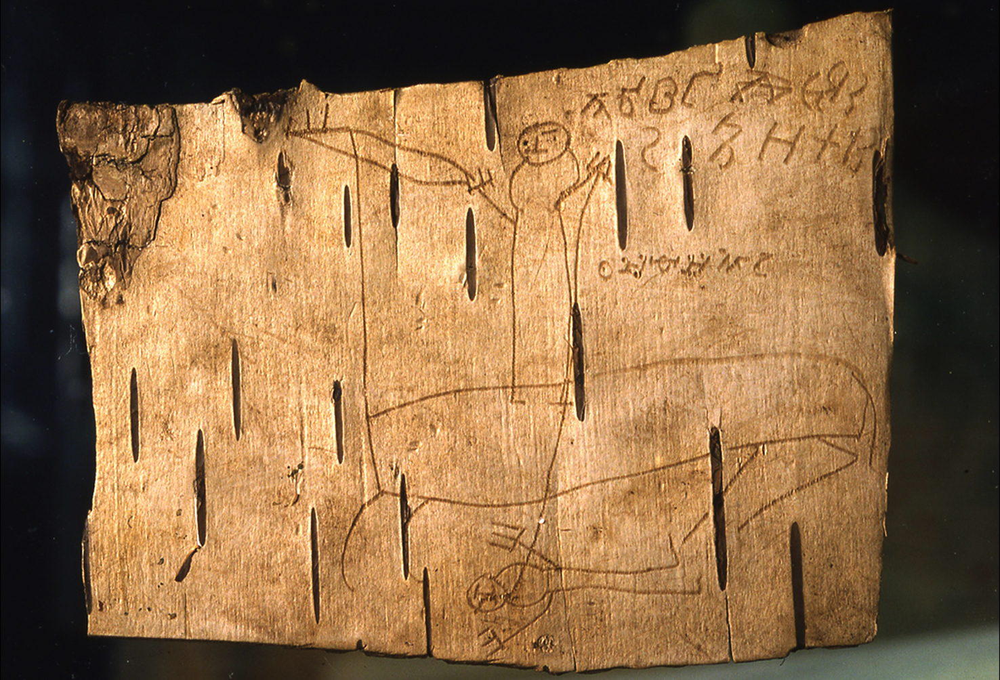

This text focuses on the burden of ontological constraints and touches on a theme of violence that embedded in the act of naming. The machine’s inability to truly name—with its opportunistic, eclectic approach to language—faces human’s nature to take a risk; and asks whether it is precisely the violence, risk, and opportunity that humans take in language that sets them apart from machines. To speak about the paradoxical relation between human language and through the lens of impotence of large language models Author uses handwriting to bring friction for access to the text for a machine. Central to this inquiry is the question of whether risk defines human language, and whether constraint—particularly the restriction of harm—ultimately sterilizes language, raising the provocation of whether an AI that is prevented from causing harm can ever truly speak and give name to things. The primary sources consist of things that the Author found emotionally or intellectually touching circa writing this text, treated as an “archive of affect” i.e. z(i)ettels, while secondary sources include texts that felt tangential or indirectly significant to the topic: Shrek, James Bond, Terminator, Jesus Christ, Smash Mouth — All Star and etc. The research process is based around the introspection; an inward spiraling motion aimed at finding inner connections and answers to things that are external to the Author, who turns himself into an emission centroid. Reflecting on the relation between these activities, the text embraces the idea that “looking inside to understand the outside” may be a schizo-inducing practice that produces unpredictably intriguing and inspiring results, asking whether such unpredictability is precisely what machines are designed to exclude, and whether one’s own instability can function as a counter-method—“an artist poses a question” in a form of a artistic hoax rather than looking for an answer to it.
